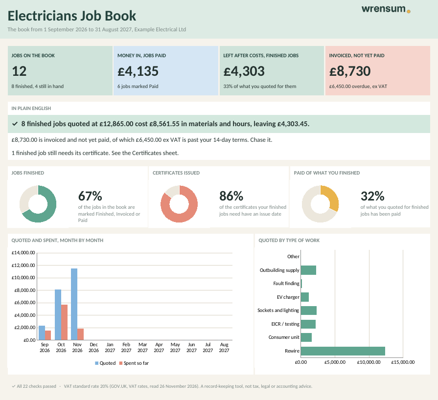
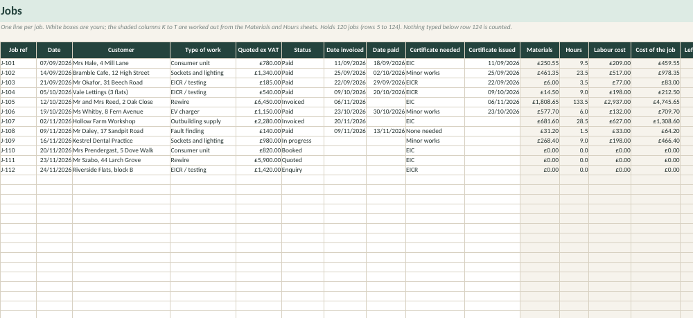
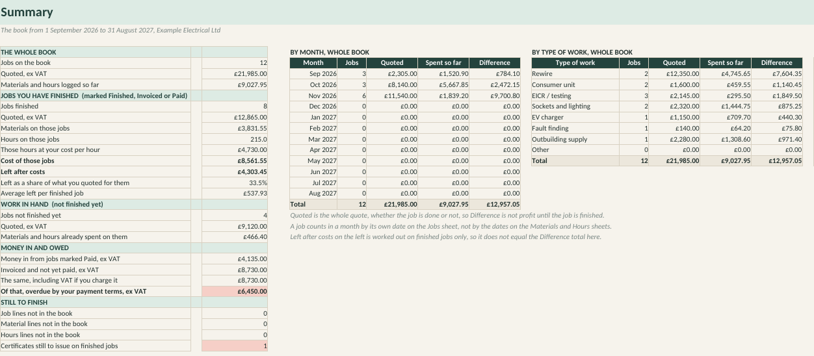
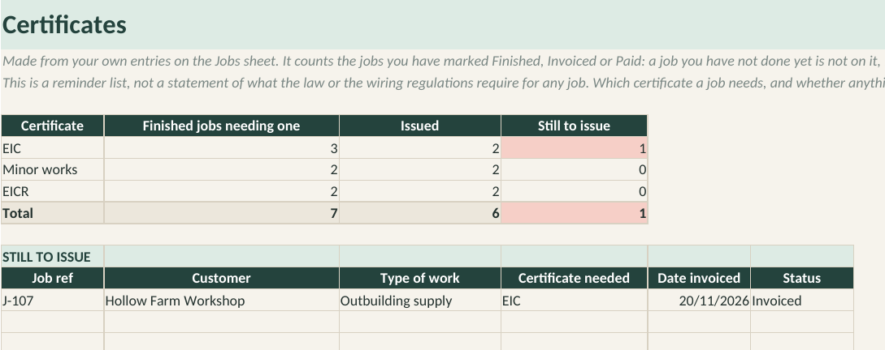

Electricians Job Pack
One Excel file for all your jobs, not one for each. Every job from the first enquiry to the money landing: what you quoted, what the materials and the hours actually cost, what is invoiced and not paid, what is overdue and which certificates you still owe. The quote template comes with it.
Buy for £29One-off payment. Two Excel files (.xlsx), delivered as a download. A planning and record-keeping tool: it is not legal, tax or accounting advice.

What you get
- The Electricians Job Book. One line per job, up to 120 jobs: your own job reference, the customer, the type of work, the price you quoted and where the job has got to, from Enquiry through to Paid
- A materials log of 400 lines and an hours log of 300 lines, each line tied to a job by its reference, picked from a drop-down so you cannot mistype it
- Every job's real cost worked out for you from those two logs: materials, hours, hours at what an hour on site costs you, and what the job left
- Finished work and work in hand kept apart, so a job you have quoted but not started never flatters the figures
- What is invoiced and not yet paid, and how much of it is past your own payment terms, worked out from today's date
- A certificate worklist: the jobs you have finished that still need an EIC, a Minor works certificate or an EICR, with nothing on it that tells you what the law requires
- A summary by month, by type of work and by status, with the types of work renamed to whatever you actually do
- A dashboard, light and dark, that says in plain English what the book is doing and warns when a job has cost more than you quoted
- 22 checks that look for the slips that would make the figures wrong: a job reference used twice, a material line pointing at no job, a job marked Paid with no payment date, a worked-out box typed over, a line typed below the last row
- The Electrician's Quote and Job Pricing Template (£9 on its own): your price list, a printable quote and the margin on a single job, included in the pack
Who it is for
Self-employed electricians and small electrical firms in the UK who do a lot of jobs rather than a few big ones, and who know what they charge but not what they keep. You need Microsoft Excel.
How the two files fit together
They do different jobs and there is no overlap between them. Use the quote template when you are pricing one job: it holds your price list, works the price up from your labour hours and trade costs, and prints the quote. Use the job book for everything after that: log the job, log what you buy and the hours you work on it, and the book tells you what that job really left and what the year looks like.



How to use it
- In Settings, enter your business details, whether you are VAT registered, what an hour on site costs you, your payment terms and the dates the book covers. Name the types of work you do.
- Put each job on the Jobs sheet as it comes in, with your own reference, and move its status along as it goes.
- Log what you buy on the Materials sheet and the hours you work on the Hours sheet, picking the job reference from the drop-down.
- Open the Dashboard whenever you want to know what you are owed, what is overdue and what the work has actually left you.
Questions
- How is this different from the Electrician's Quote and Job Pricing Template?
- The template prices one job and prints the quote for it. The job book does not price or quote anything: it keeps the record of all your jobs and tells you what they came to. They are built to be used together, which is why the pack has both. If you only ever want to price and print a quote, buy the template on its own for £9.
- Does it tell me which certificate my job needs?
- No, and it is careful not to. The Certificates sheet counts what you have typed in yourself and lists the finished jobs with no issue date against them. It states nothing about what the law or the wiring regulations require: that is your decision as the electrician.
- Does it work out my tax or my VAT return?
- No. It records what you quoted and what you spent. If you are VAT registered it shows what you are owed with VAT added at the rate you set, and nothing more. It works out no tax and sends nothing to HMRC.
- What is "left after costs"? Is that my profit?
- No, and the file says so in several places. It is the price you quoted less the materials and the hours you logged against that job. Your van, insurance, tools, phone, your own drawings and anything you did not log all come out of it afterwards.
- How does it know what is overdue?
- From the invoice date you type and the payment terms you set in Settings, against today's date. It moves on its own each day you open the file.
- Can I use my own job numbering?
- Yes, anything you like. It is the only thing tying a material or an hour to a job, so the file picks it from a drop-down on both logs, warns you if you use one twice, and warns you if a reference holds a character that would confuse the sums.
- Is 120 jobs enough?
- It holds 120 jobs, 400 material lines and 300 hours lines, and a check warns you if anything is typed below the last row rather than letting it go uncounted. If you need more, write to us.
- What do I need to open it?
- Microsoft Excel. Both files have also been tested in LibreOffice Calc, and they contain no macros.
- Are the figures in it real?
- No. Every customer, rate and cost in the example is invented, to show the format. Type over them with your own.
- How was it made?
- It was built with the help of AI, like everything on this site, and then checked: it recalculates with no errors, it has 22 checks of its own, and an independent set of tests works every figure out a second way and then damages the file in eighteen known ways to prove each check catches what it claims.
Free to use first
The markup and margin calculator shows the price to charge to hit a margin, and the day rate calculator works out what to charge for a day when you work for yourself.
Other tools
Builders who price long jobs in stages want the Builders Job Pack (£29). For income and expenses across the whole business, rather than job by job, see the Sole Trader Bookkeeping Workbook (£12).